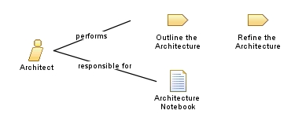

| Role: Architect |
 |
|
 |
||
| Primary Performs | ||
|---|---|---|
| Additionally Performs | ||
| Modifies |
|
|
This role leads or coordinates the technical design of the system and has overall responsibility for facilitating the major technical decisions expressed as software architecture. This typically includes identifying and documenting the architecturally significant aspects of the system as views that describe requirements, design, implementation, and deployment. This role is also responsible for providing the rationale for these decisions, balancing the concerns of the various stakeholders, reducing technical risks, and ensuring that decisions are effectively communicated, validated, and followed. This role is closely involved in organizing the team around the architecture by working closely with the Project Manager in staffing and planning the project. |
| Skills | Architects must be well-rounded people with maturity, vision, and a depth of experience that allows for grasping issues quickly and making educated, critical judgments in the absence of complete information. Specifically, the person must possess this combination of qualifications:
From an expertise standpoint, this role also needs to show both design and implementation abilities. However, from the design perspective, the effective architect typically exhibits these traits:
|
|---|---|
| Assignment Approaches | This person in this role should be engaged in the project from start to finish. For smaller projects, a single person may act as both Architect and Project Manager. However, it is better to have these roles performed by different people to ensure that the pressures one role doesn't cause neglect of the other role. The Architect and Project Manager must work together closely. |
| This role places emphasis on the core principle Focus on the architecture early to minimize risks and organize development. |
| Concepts |
|---|
This program and the accompanying materials are made available under the |